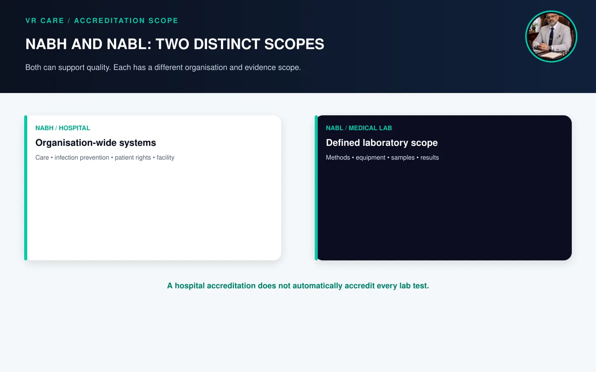
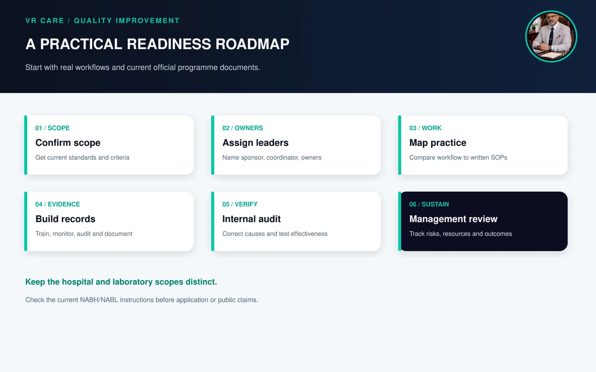

NABH vs NABL: What Each Accreditation Covers and How to Prepare
By Afzal Shaikh · Hospital Operations & Management Consultant
NABH is the Quality Council of India’s board for accreditation of hospitals and healthcare providers. NABL accredits testing and calibration laboratories, including medical testing laboratories against ISO 15189. In simple terms, NABH hospital accreditation assesses systems across applicable hospital functions; NABL assesses a laboratory’s competence and quality system for its defined scope. They are not interchangeable. A hospital may pursue one or both for different scopes, depending on its goals and applicable requirements.
- NABH vs NABL at a glance
- What NABH hospital accreditation covers
- What NABL accreditation covers in a medical laboratory
- How to decide what your organisation needs
- A practical accreditation-readiness roadmap
- Common preparation gaps
- What leadership should review monthly
- Management takeaway
- Frequently asked questions
NABH vs NABL at a glance

Figure 1. The distinct scopes of NABH and NABL accreditation
| Question | NABH hospital accreditation | NABL medical-laboratory accreditation |
|---|---|---|
| Main focus | Hospital or healthcare-provider systems and services in programme scope | Laboratory competence and quality for a defined testing scope |
| Framework | Current NABH hospital standards and programme rules | ISO 15189 and current NABL criteria |
| Typical owner | Hospital leadership, quality team and department heads | Lab leadership, quality manager and technical teams |
| Evidence examples | Patient care, medication, infection control, facility safety, HR, governance and information management | Methods, personnel competence, equipment, sample handling, quality control, reports and records |
| Coverage | Programme-specific assessment of the applicable organisation | Only locations, disciplines and tests within the granted scope |
| Can one replace the other? | No | No |
NABH identifies its 6th Edition Hospital Accreditation Standards as effective from 1 January 2025. Its programme explains that standards apply across the institution, not selectively to departments, subject to the programme and applicable requirements. Sources: NABH Hospital Accreditation Programme and NABH 6th Edition Standards.
NABL identifies ISO 15189 as the standard for medical-laboratory accreditation. Accreditation scope is specific: always check which locations, disciplines and tests are included in the current official scope. Source: NABL: Introduction.
What NABH hospital accreditation covers
NABH standards provide a framework for quality and patient safety across patient-centred and organisation-centred functions. The 6th Edition includes areas such as access and continuity of care, care of patients, medication management, patient rights and education, infection control, quality improvement, management responsibility, facility safety, human-resource management and information management.
Preparation is not a file-building exercise for the quality department alone. Departments must show that approved policies are understood, followed, monitored and improved. Relevant evidence can include current SOPs, staff training and competency records, patient records, safety rounds, infection-control monitoring, incident review, equipment maintenance and management review, as applicable.
What NABL accreditation covers in a medical laboratory
NABL accredits medical testing laboratories against ISO 15189, addressing quality and competence. A laboratory must demonstrate that processes work reliably within its proposed scope. This may include personnel competence, method control, equipment, sample collection and handling, internal quality control, external quality assessment where applicable, reporting, records and corrective action.
Scope matters. A lab should accurately communicate which site, discipline, test or service is covered. Do not imply that every test or collection centre is accredited unless the official scope confirms it.
How to decide what your organisation needs
- For organisation-wide hospital quality: review the current NABH programme, relevant standards, eligibility, application route, scope and implementation instructions directly with NABH.
- For laboratory competence: review the current NABL medical-laboratory programme, ISO 15189, specific criteria and guidance, and define the site and tests proposed for accreditation.
- If pursuing both: coordinate governance but maintain distinct scopes, evidence registers, technical owners and internal audit plans. Some controls may support both efforts; the assessment evidence is not identical.
Decide the accreditation scope first, then assign owners, evidence and an audit plan for each.
A practical accreditation-readiness roadmap

Figure 2. A practical accreditation-readiness sequence
1. Confirm scope and current requirements
Obtain the current official standards and programme documents. Record the edition and source. Build a compliance matrix showing requirement, owner, evidence, current status and next action.
2. Appoint leadership and process owners
Name an executive sponsor, coordinator and department owners. Laboratory technical leadership should own technical methods and quality, while hospital leaders coordinate organisation-wide decisions, resources and accountability.
3. Map real workflows before writing SOPs
Walk through patient admission, assessment, transfers, medication, discharge, sample collection, transport, testing, result verification and critical-result communication as relevant. Compare observed practice with documented procedures and train teams on approved changes.
4. Build evidence as part of daily work
Use controlled documents, current forms, training and competency records, equipment logs, monitoring data, incident learning, audits and corrective-action evidence. Protect privacy and confidentiality.
5. Test readiness with internal audits
Sample records and observe work across departments and shifts. Describe findings clearly, analyse causes, assign actions and verify effectiveness. Do not close an action only because a form is signed.
6. Review performance and sustain improvement
Management should review risk, patient safety, complaints, staffing, equipment, audit findings and corrective actions. Accreditation is a continuing management system, not a one-time campaign.
Common preparation gaps
- Starting with binders instead of actual work practices
- Using outdated standards, checklists or forms
- Treating attendance at training as proof of competence
- Writing SOPs staff cannot follow under real workload
- Differences between documented and observed practice
- Corrective actions closed without effectiveness checks
- Assuming NABL applies to every lab test or collection centre
- Using accreditation marks or claims outside approved scope
- Leaving statutory and infrastructure reviews too late
What leadership should review monthly
Which requirements are at risk? What repeated incident indicates a system gap? Are staff competent for assigned work? Are equipment, infection-control and patient-safety issues addressed? What tests/sites are included in the proposed or granted NABL scope? Are corrective actions effective? What management decision or resource is needed?
Leadership reviews should connect requirements, evidence, risks and corrective actions in one view.
Management takeaway
NABH and NABL can complement each other, but they address different scopes. Use current official criteria, assign operational owners and build evidence through routine work. A quality system supports reliable services; accreditation should not be described as a guarantee of clinical outcome.
VR Care’s hospital operations and management audit can help identify process, documentation, training and governance gaps. See also hospital SOPs, hospital KPIs and hospital operations and management services.
Frequently asked questions
What is the difference between NABH and NABL?
NABH accredits hospitals and healthcare providers against applicable organisation standards. NABL accredits laboratories, including medical testing laboratories against ISO 15189, for a defined scope.
Is NABL the same as NABH?
No. NABH accreditation of a hospital does not automatically accredit its lab under NABL, and NABL accreditation of a lab does not accredit the whole hospital.
Which accreditation is required for a hospital?
It depends on objectives, scope, contracts and applicable programme or legal requirements. Confirm current requirements with the accreditation body and relevant authorities; do not assume one accreditation is universally mandatory.
Can a hospital have both?
Yes. A hospital may pursue NABH for its applicable hospital scope and NABL for its laboratory scope. Each programme has distinct requirements and assessment.
What does NABL accreditation cover in a laboratory?
It covers the approved scope, such as specified locations, disciplines and tests listed in the official scope. Unlisted services should not be described as accredited.
How long does NABH preparation take?
It depends on current systems, infrastructure, staffing and corrective actions. NABH’s programme page describes minimum three-month internal implementation in its displayed process; check current instructions directly with NABH.
Does accreditation guarantee better clinical outcomes?
Accreditation assesses conformity with defined standards and systems. It can support organised quality and safety work, but is not a guarantee of an individual clinical outcome.
Further reading
- NABH: Hospital Accreditation Programme
- NABH Hospital Accreditation Standards, 6th Edition
- NABL: Introduction
- VR Care: Hospital Operational & Management Audit
- VR Care: NABH & JCI Accreditation Support
- VR Care: Hospital SOPs
- VR Care: Hospital KPIs
Photographs are AI-generated editorial illustrations and do not document a specific client assignment. Always confirm current requirements, eligibility and scope with NABH and NABL before applying or making public claims.